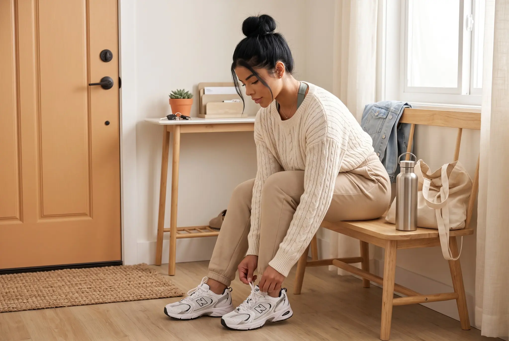

When you want a fresh start, it's tempting to change everything at once — sleep, meals, workouts, your morning routine, screen time, planning, hydration, all in the same week. That kind of overhaul can quickly become difficult to manage when you're trying to change too many things at once.
This checklist takes a different approach. Instead of asking you to fix ten things simultaneously, it's designed to help you notice which parts of your routine actually need attention right now, so you can choose a realistic starting point instead of trying to do everything at once.
Your Healthy Habits Checklist
You don't need to "complete" all ten. Read through the list and notice what's already working, what currently feels difficult, and which one or two areas would make the most useful starting point for you right now.
How to Use This Healthy Habits Checklist
Think of this less as a daily scorecard and more as an audit. The goal isn't "how many boxes can I check today" — it's "which area actually needs attention right now."
Behavior-change guidance from NIDDK generally supports starting with small, specific changes, thinking ahead about what might get in the way, and revisiting the plan when something isn't working. In that spirit, pick one or two priorities from the list below rather than trying to act on all ten at once. It's a practical way to keep a fresh start manageable, not a rule with a single right answer.
1. Check Whether You Are Making Enough Room for Sleep
Sleep can be one of the first things that gets squeezed when a schedule gets busy, which makes it a good place to start an audit. CDC guidance indicates that adults ages 18–60 generally need 7 or more hours of sleep per day, with slightly different ranges for older adults. Beyond the number of hours, giving yourself a consistent, realistic window to sleep matters too. Keeping your sleep and wake times reasonably steady can also support healthy sleep.
Check: Am I giving myself enough opportunity to sleep regularly, or is sleep the first thing I cut when the day gets full?
Focus: Protecting enough time and opportunity for sleep before adding new habits on top of it.
Small reset step: Pick one night this week to protect your sleep window before you plan anything else.
2. Make Hydration Easier to Remember
Daily hydration needs vary from person to person depending on factors like activity level, climate, age, and other individual circumstances, so there isn't one fixed number that fits everyone. Water can also come from other beverages and from foods with high water content, not only from a glass at your desk. Plain water remains a simple, calorie-free option when you're deciding what to drink.
Check: Is water easy to reach during the parts of my day when I tend to forget about it?
Focus: Making water the convenient default, not hitting an exact number.
Small reset step: Put a water bottle somewhere you'll actually see it, or connect drinking water to something you already do, like meals.
3. Look at Where Movement Fits Into Your Week
Current U.S. physical activity guidance for adults generally points to 150–300 minutes per week of moderate-intensity activity, or 75–150 minutes of vigorous activity, along with muscle-strengthening activity on at least two days a week. Guidance also supports the idea that activity adds up across the week and that some movement is better than none — you don't need a long, unbroken session for it to count.
Check: Where could movement realistically fit into my week, given how it actually looks right now?
Focus: Finding a realistic opportunity, not building a full program on day one.
Small reset step: Choose one specific time slot this week where a short walk or a bit of movement could realistically happen.
If home is where movement fits best right now, Home Workout Essentials for Women covers the basics of putting together a simple home workout setup.
4. Give Your Meals a Little More Structure
The Dietary Guidelines for Americans, 2025–2030 are the current official U.S. dietary guidelines, and at a high level they emphasize eating patterns built around whole, nutrient-dense foods — things like protein, vegetables, fruits, whole grains, and healthy fats — while reducing highly processed foods, including those high in added sugars, sodium, and unhealthy fats. This article isn't a meal plan, so the more useful question for a fresh start is where your current routine creates friction. Having a few reliable meals in rotation, keeping basic ingredients on hand, and deciding a handful of meals ahead of the busiest days can all reduce last-minute decision-making. None of that requires a full weekly meal-prep session if that's not realistic for you.
Check: Do I have enough structure that meals don't constantly become last-minute decisions?
Focus: Reducing daily food friction, not following a strict plan.
Small reset step: Pick one part of the week — a busy weeknight, for example — and decide that meal ahead of time.
5. Simplify Your Morning Routine
A useful morning routine doesn't need a long list of rituals to be effective. Some consistency in when you wake up, along with normal exposure to daytime light as part of your sleep-wake cycle, can support a more settled routine over time. Beyond that, the most practical lever is usually reducing morning friction — having fewer decisions to make before you're out the door.
Check: What would make my mornings feel a little less rushed or chaotic?
Focus: One simple anchor, not a complete ritual.
Small reset step: Choose a single morning anchor that fits your life — that might be water, a few minutes outside, getting dressed without rushing, or prepping one thing the night before. You don't need all of them.
If you want more inspiration for that anchor, Healthy Morning Routine Ideas walks through simple morning routine ideas for building a realistic start to the day.
6. Give Your Evening a Simple Wind-Down
Evenings tend to work better with a little quiet time before bed rather than staying hectic until the moment you get into bed. Dimming bright lights in the evening, keeping your sleep and wake timing reasonably consistent, and being mindful that caffeine, alcohol, and very large meals close to bedtime can interfere with sleep are all reasonable, evidence-aware starting points. None of this needs to become an elaborate routine.
Check: Does my evening help me transition toward sleep, or does it stay hectic right up until I get into bed?
Focus: One simple cue that signals the day is winding down.
Small reset step: Choose one wind-down cue — dimmer lights, a set stopping point for screens, or a consistent last task before bed.
7. Choose a Few Priorities for the Week
This is often where a fresh start either becomes manageable or falls apart. NIDDK behavior-change guidance generally supports setting specific, smaller goals rather than broad resolutions, thinking through what might get in the way, and adjusting the plan when circumstances change. The weekly structure itself is simply an organizing choice — a practical way to keep a fresh start focused rather than a requirement.
Check: What one or two healthy priorities actually matter most this week?
Focus: A short, specific list rather than a long one.
Small reset step: Name your one or two priorities and decide, specifically, when or where they'll realistically happen.
8. Make Healthy Choices Easier in Your Environment
Your surroundings can quietly support or work against your intentions. Keeping water within reach, having useful foods available, and preparing for planned activity ahead of time can make those choices easier to follow through on, rather than something you have to negotiate every time. This doesn't require an expensive setup — small, practical adjustments can make the habits you want easier to follow.
Check: Is my environment making the habits I want easier, or more inconvenient?
Focus: One small, practical change rather than a full reorganization.
Small reset step: Change one specific thing — move your walking shoes somewhere visible, keep a go-to snack on hand, or set out tomorrow's essentials tonight.

9. Notice What Your Screen Time Is Replacing
For adults, it is more useful here to focus on where screen use is affecting the rest of your routine rather than imposing a universal daily hour target. Current CDC sleep guidance recommends turning off electronic devices at least 30 minutes before bedtime. Beyond that specific window, it's often more useful to ask what screen time is displacing in your day than to track hours for their own sake — is it regularly pushing out sleep, movement, meals, or downtime you'd actually rather have?
Check: Is screen time regularly taking the place of sleep, movement, meals, or downtime I actually value?
Focus: One point in the day where a boundary would help, not a total-hours target.
Small reset step: Identify one specific window — often the 30 minutes before bed — where stepping away from screens would make the most difference.
10. Review What Is Working Before You Start Over Again
A short, regular check-in can give you a chance to notice what is working and adjust what is not. Behavior-change guidance generally supports noticing what's working, expecting occasional setbacks, and adjusting the plan rather than treating any single off week as a failure. A brief weekly reflection is simply a practical way to build that check-in into your routine — it isn't a requirement, and it doesn't need to be elaborate.
Check: What worked this week? What felt difficult? What's worth adjusting?
Focus: Reviewing and adjusting, not restarting from zero.
Small reset step: Make one specific adjustment for next week instead of rebuilding the whole plan.
If a setback turns into a longer stretch of feeling off track, How to Reset Your Healthy Habits When You've Fallen Off Track walks through how to find your way back without starting over completely.
You Do Not Need to Reset Everything
Turning This Checklist Into a Plan
A checklist is useful for identifying what deserves attention. Building that into a routine you can actually practice is a different task — one that benefits from a bit more structure than a single article can offer.
The 30-Day Healthy Lifestyle Reset was built for exactly that step. It includes a Reset Guide, a 30-Day Dashboard, Weekly Action Sheets, and a Healthy Lifestyle Toolkit, giving you planning, tracking, routine-building, and weekly reflection tools to help you organize your fresh start over 30 days of practice, tracking, and adjustment.
FAQ
What should be on a healthy habits checklist?
A useful checklist covers the broad areas that tend to affect daily wellbeing — sleep, hydration, movement, meals, morning and evening routines, weekly planning, your environment, screen habits, and reflection. Not every reader needs to prioritize all of them at once; the point is to see the full picture and decide what matters most for you right now.
What are some healthy habits to start?
Simple starting points include making enough room for sleep, keeping water accessible, adding one realistic pocket of movement to your week, giving a few meals more structure, and planning ahead for the busiest parts of your schedule. You don't need to start all of them at the same time.
Should I change all my habits at once?
Not necessarily. A more manageable fresh start usually focuses on one or two priorities first, then builds from there as those changes settle in. There's no universal rule that one or two is the "correct" number — it's simply a practical way to keep the process realistic.
How do I know which healthy habit to focus on first?
Look for where the most friction currently shows up — what repeatedly feels difficult, rushed, or inconsistent. The area that would make everyday life noticeably easier is usually a reasonable place to start.
How long does it take to build a healthy habit?
This varies a lot depending on the person, the specific habit, and your circumstances, so there isn't a fixed timeline that applies to everyone. Rather than aiming for a specific number of days, it can help to focus on consistency and adjusting as you go.
What should I do if my healthy habits fall off track?
Setbacks are a normal part of the process, not a sign that you need to start over. If you've fallen out of a routine you'd already built, How to Reset Your Healthy Habits When You've Fallen Off Track can help you find your way back.
A Fresh Start Doesn't Require Becoming a Different Person
You don't need to overhaul your entire routine to make progress. This checklist exists to help you see what deserves attention, choose a realistic starting point, and build from there — one adjustment at a time.
A fresh start works better as a direction than a deadline.